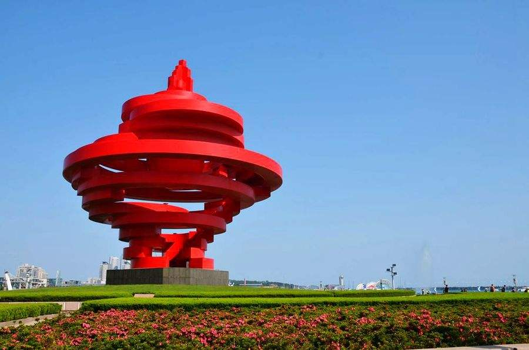
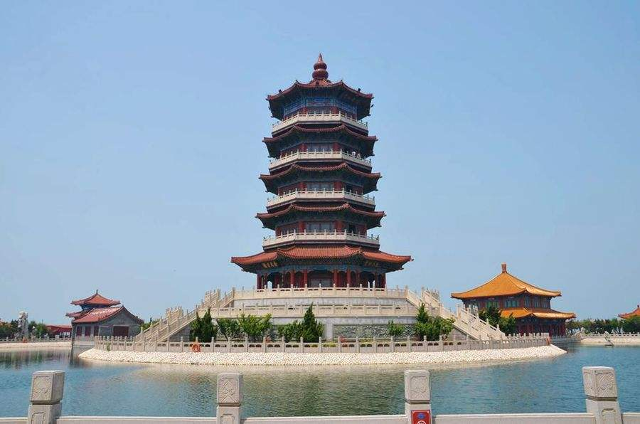

泰山又名岱山、岱宗、岱岳、东岳、泰岳，位于山东省中部，隶属于泰安市，绵亘于泰安、济南、淄博三市之间，总面积24200公顷。主峰玉皇顶海拔1545米，气势雄伟磅礴，有“五岳之首”、“五岳之长”、五岳之尊、“天下第一山”之称。是世界自然与文化遗产，世界地质公园，国家AAAAA级旅游景区，国家级风景名胜区，全国重点文物保护单位，全国文明风景旅游区。
泰山被古人视为“直通帝座”的天堂，成为百姓崇拜，帝王告祭的神山，有“泰山安，四海皆安”的说法。自秦始皇开始到清代，先后有13代帝王引次亲登泰山封禅或祭祀，另外有24代帝王遣官祭祀72次。
泰山宏大的山体上留下了20余处古建筑群，2200余处碑碣石刻。道教、佛教视泰山为“仙山佛国”，神化泰山，在泰山建造了大量宫观寺庙。
泰山是中华民族的象征，是东方文化的缩影，是“天人合一”思想的寄托之地，是中华民族精神的家园。
崂山，位于青岛市东部，古代又曾称牢山、劳山、鳌山等。它是山东半岛的主要山脉，崂山的最高峰名为巨峰，又称崂顶，地处北纬36°10′，东经120°37′，海拔1132.7米，峰顶面积约1.5平方公里，为崂山的主峰。是中国海岸线第一高峰，有着海上“第一名山”之称。当地有一句古语说：“泰山虽云高，不如东海崂。”
崂山，东高而悬崖傍海，西缓而丘陵起伏，山区面积446平方公里。山脉以崂顶为中心，向四方延伸，尤以西北、西南两个方向延伸较长，形成了巨峰、三标山、石门山和午山四条支脉，崂山的余脉沿东海岸向北至即墨市的东部，西抵胶州湾畔，西南方向的余脉则延伸到青岛市区，形成了市区的十余个山头和跌宕起伏的丘陵地形。
 五四广场因“五四运动”而得名。众所周知，1919年爆发的伟大的反帝爱国运动—“五四运动”的导火索是青岛的主权问题。自1897年德国占领青岛后，中国人民就一直为收回青岛主权而努力。1914年日本取代德国占领青岛后，引起全国人民强烈反对。1918的11月第一次世界大战结束，1919年1月，在法国巴黎“和平会议”上，中国作为战胜国出席会议，提出了收回青岛主权等正当要求，却遭到英、法、美、日等国的拒绝，并强行将青岛主权转让给日本。消息传来，全国震惊，北京学生于5月4日举行游行示威，强烈要求拒绝签约，高呼“誓死力争青岛主权”，“还我山东，还我青岛”等口号。学生的爱国行为得到全国人民的支持，在举国反对声中，中国北洋政府被迫拒绝在巴黎和会上签字，粉碎了日本企图永久侵占青岛的阴谋。在中国人民的英勇斗争下，终于在1922年12月12日收回了青岛主权。鉴于青岛与“五四运动”这一特殊的关系，青岛市委、市政府决定将新建广场命名为“五四广场”。
 八仙过海景区是胶东半岛独具特色的风景名胜区，景区三面环海，形如宝葫芦横卧在大海之上。古老的神话
传说、神奇的海市奇观、迷人的山海风光，吸引了无数海内外游客来此旅游观光、休闲度假，同时也满足了人们拜仙祈福，祈求长生不老的美好愿望。蓬莱因而享有人间仙境、休闲天堂、旅游胜地之美誉。是黄海之滨一颗璀璨的明珠，是烟台黄金旅游线上观景览胜的绝佳去处。
景区以道教文化和蓬莱神话为背景，以八仙传说为主题，突出大海仙山的创意，集古典建筑与艺术园林于一体，内涵丰富，意境深远，观览性极强。
泉城广场是山东省省会济南市的中心广场，坐落于济南市中心繁华地带。它南屏千佛山，北依大明湖，西临趵突泉，东眺解放阁。广场东西长790米，南北宽280米，占地面积330亩，约22万平方米，主体面积270亩。地上绿化面积8万平方米，水面面积约2万平方米，地面铺装达12万平方米。
自1999年建成以来，泉城广场多次接待党和国家领导人、国外友人以及全国各地代表团，也是举办的各类大型公益性活动和宣传活动的首选之地，已成为济南乃至山东省的一道靓丽的风景线。
2002年8月，泉城广场正式被联合国教科文组织授予“联合国国际艺术广场”称号，泉城广场成为中国第一家也是唯一一家获此荣誉的城市广场。
趵突泉位于山东省济南市市中区，南靠千佛山，东临泉城广场，北望大明湖、五龙潭。趵突泉面积达158亩，是以泉为主的国家AAAAA级旅游景区特色园林、国家首批重点公园。
趵突泉位居济南七十二名泉之首，被誉为“天下第一泉”，也是最早见于古代文献的济南名泉。
趵突泉是泉城济南的象征与标志，与济南千佛山、大明湖并称为济南三大名胜。趵突泉周边的名胜古迹枚不胜数，尤以泺源堂、观澜亭、尚志堂、李清照纪念堂、李苦禅纪念馆等景点最为人称道。
2016年9月5日下午，趵突泉泉群省级地质公园揭牌开园。